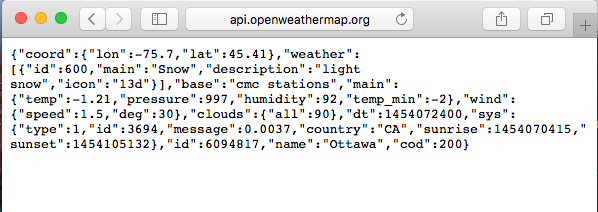
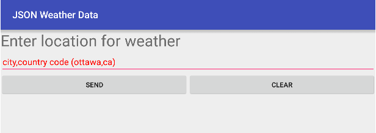
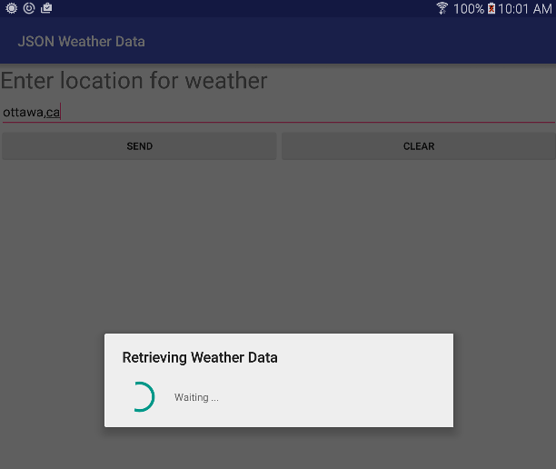
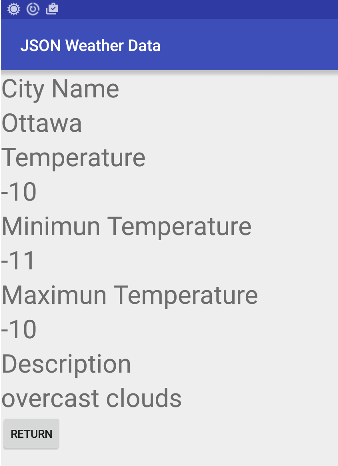

COMP 2601 Winter 2016
Ex 07 JSON-based Web API
© L.D. Nel 2016
Revisions -none yet
Description:
The purpose of this exercise is to get you started with JSON (javascript object notation) in the context of using a Web API that returns JSON data.
IMPORTANT: For this class exercise you will need to get yourself an openweathermap appid to use their API. You can sign up for a free account (which gets you an appid at): http://openweathermap.org/appid
(In the last year or so many of the web API's have gone to requiring some kind of app id.)
You need to demonstrate your exercise to the TA or Prof. before you leave the class to get credit for it. Marks: 2 or completion, 1 for partial progress, 0 for no show or no progress. (A mark of 1 can be upgraded to 2 is show us your completed work within one week of this exercise.)
Instructions:
Background:
Web API's are the new "user interface" -a "user interface" for apps instead of people. Here we will explore the http://openweathermap.org service that you can query with HTTP GET messages and get JSON data back. The programmable web site lists some 14,500 web API's (and provides tutorial material on developing web API's). Some key technologies are HTTP, REST, XML, JSON. In some domains XML dominates the data interchange format in others JSON dominates. The trend seems to be towards more and more JSON.
Problem 1 -Test Your App ID
Open your favourite browser on your computer then using your appid query the following URL including the query parameters after the "?". (Note the appid provided in this demo link is fake. You will have to use your own appid for things to work.)
http://api.openweathermap.org/data/2.5/weather?q=ottawa,ca&units=metric&appid=9004ee31d851396dcf03893cfb2b7563
You should see the the browser (Safari in this case) render the JSON object returned by the HTTP get request. In this exercise we will build an android app to obtain and parse this kind of data. Some things to note: it is JSON format, it has weather data for Ottawa, and it has a "cod" response code of 200. 200 is the HTTP response status code for success.

Demo Code
Open the demo code provided. It provides two activities and layouts which we will use to build the app. The main activity layout has a UI with a text edit field to type in the city and country code information, and two buttons labelled "SEND" and "CLEAR". SEND is intended to send the HTTP get request to the openweathermap.org server and CLEAR erases the text field.
The second activity WeatherActivity.java provides a place to display the data obtained from the weather service. This second activity is complete and should not need modification.
The Demo code provided will not run as intended until you hard-code in your appid obtained from openweathermap.org. Then you can launch the demo code and it should look as follows:

If you enter a location like "ottawa,ca" and press SEND you will just see the progress dialog launch and wait, and wait, and wait..., as no data request is being sent yet.

Problem 2 -Sending the GET request
HTTP provides several "verbs": GET, POST, PUT, UPDATE, DELETE. When you type a URL in your browser address bar and hit enter it makes a GET request to server at that URL. The URL can contain query parameters denoted by a "?". Notice the query parameter data is quite visible. (You probably would not want your credit card number appearing in the address bar of a browser.)
REST (Representational State Transfer) is an architectural guideline for what HTTP verbs you should use for what and what kind of data to transfer. We will explore aspects of REST throughout the course. The GET request with JSON response is just one use-case of REST.
Recall that Android does not want network requests made on the main UI thread. You will need to implement an AsyncTask, as from last week's exercises, to do HTTP requests of a network server.
To make an HTTP GET request you do the following steps:
1) Create a url string for your request. for example (the city information should come from the textfield on the UI):
String mWeatherString = "http://api.openweathermap.org/data/2.5/weather?q=ottawa,ca&units=metric&appid=YOUR_APPID_HERE";
2) Create a URL object initialized with the url string.
URL mWeatherUrl = null;
try {
mWeatherUrl = new URL(mWeatherString);
} catch (MalformedURLException e) { e.printStackTrace();
}
3) Create an HTTP connection using the URL object, wrap it in an inputStream and bufferedReader and read the data response from the server.
try {
mConnection = (HttpURLConnection) mWeatherUrl.openConnection();
InputStream mInStream = new BufferedInputStream(mConnection.getInputStream());
mReader = new BufferedReader(new InputStreamReader(mInStream));
mStrBuffer = new StringBuffer();
String line = "";
while ((line = mReader.readLine()) != null) {
mStrBuffer.append(line);
}
} catch (UnknownHostException e){
e.printStackTrace();
Log.i(TAG, getString(R.string.error_unknownhost));
} catch (IOException e) {
e.printStackTrace();
} finally {
if (mConnection != null) {
mConnection.disconnect();
}
try {
if (mReader != null) {
mReader.close();
}
} catch (IOException e) {
e.printStackTrace();
}
}
4) Finally print the received JSON string to the logcat to see what you have.
if (mStrBuffer != null){
Log.i(TAG, mStrBuffer.toString());
} else {
Log.i(TAG, "ERROR: not response data received";
}
Recall to get this all to work you will have to make use of an AsyncTask since the HTTP connection to the server cannot be made on the main UI thread. You would presumably launch the async. task as a result of the user pressing the "SEND" button. Recall the async work is done in the
doInBackground()
method of the AsyncTask object.
For this problem demonstrate that you can display the JSON weather data string returned by the HTTP GET on the logcat terminal.
Problem 3 Parsing the JSON Data
Now we want to parse the JSON data string obtained from the weather server and display parts of the parsed JSONObject on the logcat terminal. Do this in the
onPostExecute(String result)
method of the AsyncTask. Specifically you want your doInBackground() method to return the JSON string result which will then be passed as the input parameter to the onPostExecute(String result).
The JSON string can be parsed into an instance of JSONObject.
You can parse the JSON data string as follows.
protected void onPostExecute(String result) {
super.onPostExecute(result);
JSONObject mJSONWeatherData = null;
try {
mJSONWeatherData = new JSONObject(result);
Log.i(TAG, mJSONWeatherData.toString());
progress.dismiss();
if (mJSONWeatherData.getInt("cod") == 200)
Log.i(TAG, "SUCCESS");
} catch (JSONException e) {
e.printStackTrace();
}
}
Look up how individual fields of the JSONObject can be accessed. Display the parsed JSONObject on the logcat terminal. Actually extract some of the relevant fields out of the JSON object, don't just dump the toString() of the whole object.
Problem 4: Displaying the Weather Information
Finally, instead of just displaying your weather information on the logcat terminal, create the appropriate Intent to launch the WeatherActivity to display (and if need be parse) the weather data. The code for WeatherActivity is provided and should not need modification but feel free to modify it if you want.
The WeatherActivity screen might look as follows:

When you have completed these problems demonstrate your code to the TA or Prof. to get credit for the tutorial.Â